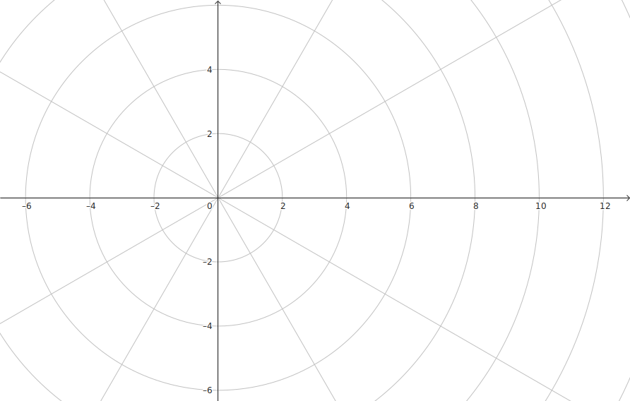
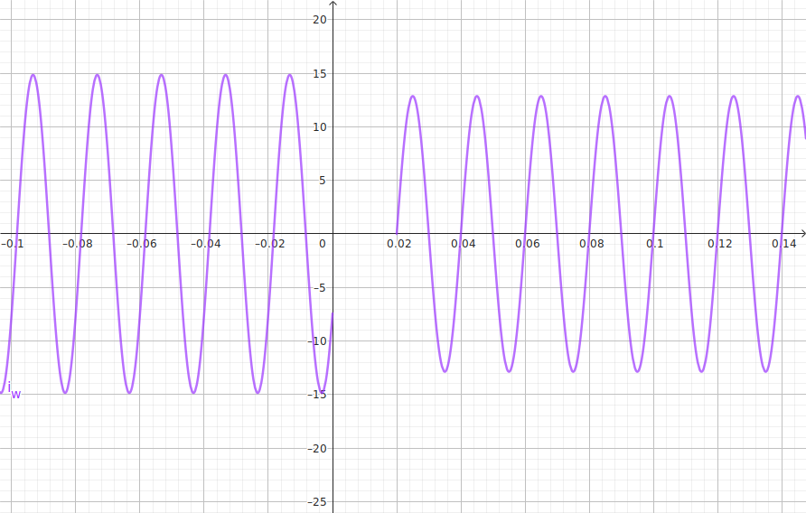

Ce circuit est constitué d'un moteur modélisé par une inductance L = 36 mH et une résistance R = 20 Ω (branche 1) associé en dérivation à un condensateur C = 68µF et un interrupteur (branche 2).
L'ensemble est alimenté par une source de tension sinusoïdale secteur \(u(t) = 240\sqrt{2}\sin(100\pi t) \), modélisée par un vecteur de Fresnel \(\underline{u}=240\) (en V).
avant le temps \(t=0\), l'interrupteur est ouvert et le régime permanent est établi. On ferme l'interrupteur à \(t=0\).
On arrondira les résultats à un chiffre après la virgule et au degrès près.
|  |  |